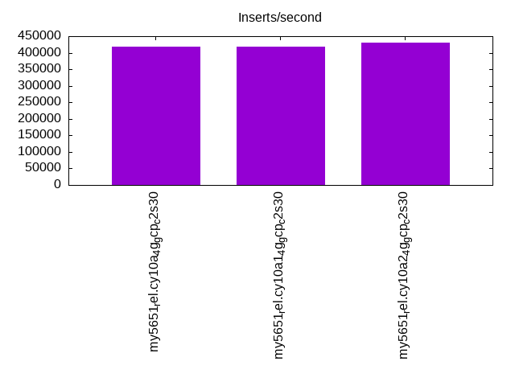
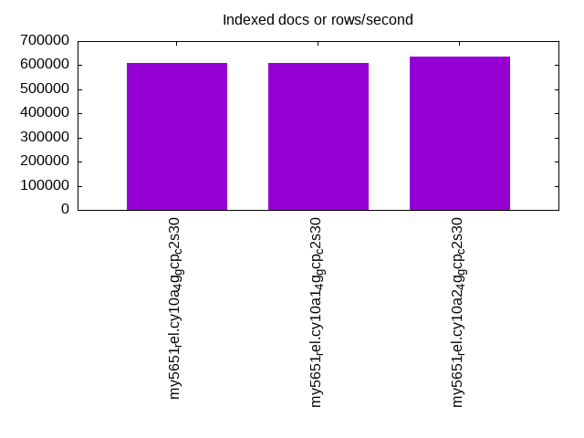
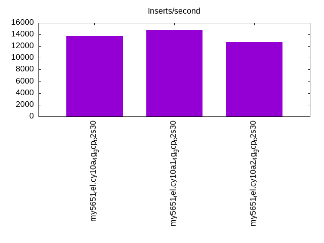
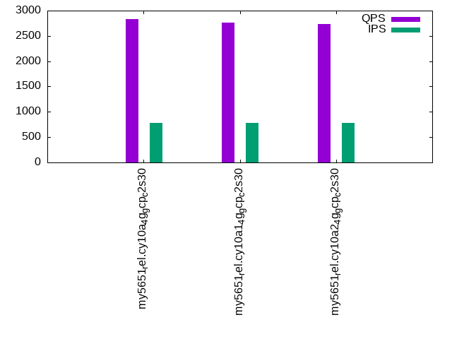
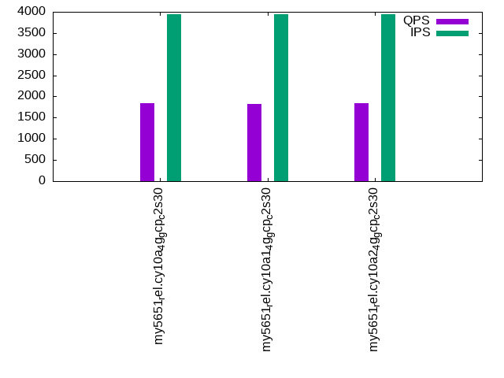
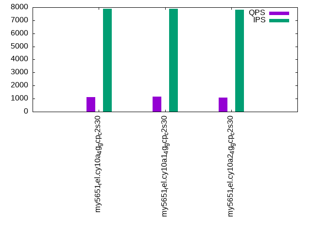

This is a report for the insert benchmark with 160M docs and 8 client(s). It is generated by scripts (bash, awk, sed) and Tufte might not be impressed. An overview of the insert benchmark is here and a short update is here. Below, by DBMS, I mean DBMS+version.config. An example is my8020.c10b40 where my means MySQL, 8020 is version 8.0.20 and c10b40 is the name for the configuration file.
The test server is a c2-standard-30 from GCP with 15 cores, hyperthreads disabled, 120G RAM, XFS + SW RAID 0 on 4 NVMe devices (1.5TB). The benchmark was run with 8 client and there were 1 or 3 connections per client (1 for queries or inserts without rate limits, 1+1 for rate limited inserts+deletes). There are 8 tables, client per table. It loads 160M rows without secondary indexes, creates secondary indexes, then inserts 800M rows with a delete per insert to avoid growing the table. It then does 3 read+write tests for 1800s each that do queries as fast as possible with 100, 500 and then 1000 inserts/second/client concurrent with the queries and 1000 deletes/second to avoid growing the table. The database is cached by the OS but not by InnoDB.
The tested DBMS are:
The numbers are inserts/s for l.i0 and l.i1, indexed docs (or rows) /s for l.x and queries/s for q*.2. The values are the average rate over the entire test for inserts (IPS) and queries (QPS). The range of values for IPS and QPS is split into 3 parts: bottom 25%, middle 50%, top 25%. Values in the bottom 25% have a red background, values in the top 25% have a green background and values in the middle have no color. A gray background is used for values that can be ignored because the DBMS did not sustain the target insert rate. Red backgrounds are not used when the minimum value is within 80% of the max value.
| dbms | l.i0 | l.x | l.i1 | q100.1 | q500.1 | q1000.1 |
|---|---|---|---|---|---|---|
| my5651_rel.cy10a_4g_gcp_c2s30 | 418848 | 611069 | 13772 | 2832 | 1843 | 1110 |
| my5651_rel.cy10a1_4g_gcp_c2s30 | 417754 | 611069 | 14776 | 2767 | 1828 | 1143 |
| my5651_rel.cy10a2_4g_gcp_c2s30 | 430108 | 635317 | 12749 | 2731 | 1849 | 1095 |
This table has relative throughput, throughput for the DBMS relative to the DBMS in the first line, using the absolute throughput from the previous table. Values less than 0.95 have a yellow background. Values greater than 1.05 have a blue background.
| dbms | l.i0 | l.x | l.i1 | q100.1 | q500.1 | q1000.1 |
|---|---|---|---|---|---|---|
| my5651_rel.cy10a_4g_gcp_c2s30 | 1.00 | 1.00 | 1.00 | 1.00 | 1.00 | 1.00 |
| my5651_rel.cy10a1_4g_gcp_c2s30 | 1.00 | 1.00 | 1.07 | 0.98 | 0.99 | 1.03 |
| my5651_rel.cy10a2_4g_gcp_c2s30 | 1.03 | 1.04 | 0.93 | 0.96 | 1.00 | 0.99 |
This lists the average rate of inserts/s for the tests that do inserts concurrent with queries. For such tests the query rate is listed in the table above. The read+write tests are setup so that the insert rate should match the target rate every second. Cells that are not at least 95% of the target have a red background to indicate a failure to satisfy the target.
| dbms | q100.1 | q500.1 | q1000.1 |
|---|---|---|---|
| my5651_rel.cy10a_4g_gcp_c2s30 | 786 | 3945 | 7873 |
| my5651_rel.cy10a1_4g_gcp_c2s30 | 787 | 3950 | 7882 |
| my5651_rel.cy10a2_4g_gcp_c2s30 | 787 | 3941 | 7818 |
| target | 800 | 4000 | 8000 |
l.i0: load without secondary indexes. Graphs for performance per 1-second interval are here.
Average throughput:
Insert response time histogram: each cell has the percentage of responses that take <= the time in the header and max is the max response time in seconds. For the max column values in the top 25% of the range have a red background and in the bottom 25% of the range have a green background. The red background is not used when the min value is within 80% of the max value.
| dbms | 256us | 1ms | 4ms | 16ms | 64ms | 256ms | 1s | 4s | 16s | gt | max |
|---|---|---|---|---|---|---|---|---|---|---|---|
| my5651_rel.cy10a_4g_gcp_c2s30 | 2.848 | 96.727 | 0.245 | 0.166 | 0.014 | 0.198 | |||||
| my5651_rel.cy10a1_4g_gcp_c2s30 | 2.088 | 97.499 | 0.237 | 0.162 | 0.014 | 0.240 | |||||
| my5651_rel.cy10a2_4g_gcp_c2s30 | 2.562 | 97.024 | 0.242 | 0.158 | 0.014 | 0.208 |
Performance metrics for the DBMS listed above. Some are normalized by throughput, others are not. Legend for results is here.
ips qps rps rmbps wps wmbps rpq rkbpq wpi wkbpi csps cpups cspq cpupq dbgb1 dbgb2 rss maxop p50 p99 tag 418848 0 3281 12.8 350.9 101.5 0.008 0.031 0.001 0.248 88485 42.4 0.211 15 10.6 139.1 4.3 0.198 53842 43168 160m.my5651_rel.cy10a_4g_gcp_c2s30 417754 0 3293 12.9 351.6 100.5 0.008 0.032 0.001 0.246 86590 42.5 0.207 15 10.6 139.1 4.3 0.240 53842 43453 160m.my5651_rel.cy10a1_4g_gcp_c2s30 430108 0 3382 13.2 362.8 104.6 0.008 0.031 0.001 0.249 90742 42.7 0.211 15 10.6 139.1 4.3 0.208 55740 45166 160m.my5651_rel.cy10a2_4g_gcp_c2s30
l.x: create secondary indexes.
Average throughput:
Performance metrics for the DBMS listed above. Some are normalized by throughput, others are not. Legend for results is here.
ips qps rps rmbps wps wmbps rpq rkbpq wpi wkbpi csps cpups cspq cpupq dbgb1 dbgb2 rss maxop p50 p99 tag 611069 0 275 1.1 3193.3 574.8 0.000 0.002 0.005 0.963 27388 39.8 0.045 10 21.7 150.2 4.3 0.002 NA NA 160m.my5651_rel.cy10a_4g_gcp_c2s30 611069 0 279 1.1 3235.6 573.2 0.000 0.002 0.005 0.961 19565 39.7 0.032 10 21.7 150.2 4.4 0.003 NA NA 160m.my5651_rel.cy10a1_4g_gcp_c2s30 635317 0 260 1.0 3126.0 591.8 0.000 0.002 0.005 0.954 27315 39.7 0.043 9 21.7 150.2 4.3 0.002 NA NA 160m.my5651_rel.cy10a2_4g_gcp_c2s30
l.i1: continue load after secondary indexes created. Graphs for performance per 1-second interval are here.
Average throughput:
Insert response time histogram: each cell has the percentage of responses that take <= the time in the header and max is the max response time in seconds. For the max column values in the top 25% of the range have a red background and in the bottom 25% of the range have a green background. The red background is not used when the min value is within 80% of the max value.
| dbms | 256us | 1ms | 4ms | 16ms | 64ms | 256ms | 1s | 4s | 16s | gt | max |
|---|---|---|---|---|---|---|---|---|---|---|---|
| my5651_rel.cy10a_4g_gcp_c2s30 | 0.715 | 26.446 | 67.845 | 4.735 | 0.258 | 0.851 | |||||
| my5651_rel.cy10a1_4g_gcp_c2s30 | 0.487 | 31.606 | 64.267 | 3.228 | 0.412 | 0.858 | |||||
| my5651_rel.cy10a2_4g_gcp_c2s30 | 0.764 | 23.756 | 68.252 | 6.955 | 0.274 | 1.000 |
Delete response time histogram: each cell has the percentage of responses that take <= the time in the header and max is the max response time in seconds. For the max column values in the top 25% of the range have a red background and in the bottom 25% of the range have a green background. The red background is not used when the min value is within 80% of the max value.
| dbms | 256us | 1ms | 4ms | 16ms | 64ms | 256ms | 1s | 4s | 16s | gt | max |
|---|---|---|---|---|---|---|---|---|---|---|---|
| my5651_rel.cy10a_4g_gcp_c2s30 | 0.001 | 1.111 | 29.398 | 65.795 | 3.670 | 0.026 | 0.497 | ||||
| my5651_rel.cy10a1_4g_gcp_c2s30 | 0.001 | 0.906 | 34.823 | 61.711 | 2.386 | 0.173 | 0.627 | ||||
| my5651_rel.cy10a2_4g_gcp_c2s30 | 0.001 | 1.131 | 26.612 | 66.471 | 5.748 | 0.038 | 0.475 |
Performance metrics for the DBMS listed above. Some are normalized by throughput, others are not. Legend for results is here.
ips qps rps rmbps wps wmbps rpq rkbpq wpi wkbpi csps cpups cspq cpupq dbgb1 dbgb2 rss maxop p50 p99 tag 13772 0 462 2.3 14350.1 436.5 0.034 0.173 1.042 32.453 145274 32.9 10.549 358 40.9 175.5 4.3 0.851 1798 200 160m.my5651_rel.cy10a_4g_gcp_c2s30 14776 0 494 2.5 14872.8 475.7 0.033 0.172 1.007 32.968 132256 35.8 8.950 363 40.9 175.6 4.3 0.858 1899 200 160m.my5651_rel.cy10a1_4g_gcp_c2s30 12749 0 435 2.2 14939.7 445.1 0.034 0.175 1.172 35.749 147042 31.5 11.534 371 41.0 175.5 4.3 1.000 1648 150 160m.my5651_rel.cy10a2_4g_gcp_c2s30
q100.1: range queries with 100 insert/s per client. Graphs for performance per 1-second interval are here.
Average throughput:
Query response time histogram: each cell has the percentage of responses that take <= the time in the header and max is the max response time in seconds. For max values in the top 25% of the range have a red background and in the bottom 25% of the range have a green background. The red background is not used when the min value is within 80% of the max value.
| dbms | 256us | 1ms | 4ms | 16ms | 64ms | 256ms | 1s | 4s | 16s | gt | max |
|---|---|---|---|---|---|---|---|---|---|---|---|
| my5651_rel.cy10a_4g_gcp_c2s30 | 26.726 | 23.994 | 27.672 | 19.126 | 2.481 | 0.001 | nonzero | 0.317 | |||
| my5651_rel.cy10a1_4g_gcp_c2s30 | 26.891 | 24.147 | 27.389 | 18.690 | 2.880 | 0.002 | nonzero | 0.305 | |||
| my5651_rel.cy10a2_4g_gcp_c2s30 | 26.712 | 23.479 | 27.594 | 19.361 | 2.849 | 0.005 | 0.220 |
Insert response time histogram: each cell has the percentage of responses that take <= the time in the header and max is the max response time in seconds. For max values in the top 25% of the range have a red background and in the bottom 25% of the range have a green background. The red background is not used when the min value is within 80% of the max value.
| dbms | 256us | 1ms | 4ms | 16ms | 64ms | 256ms | 1s | 4s | 16s | gt | max |
|---|---|---|---|---|---|---|---|---|---|---|---|
| my5651_rel.cy10a_4g_gcp_c2s30 | 39.111 | 56.149 | 4.701 | 0.038 | 0.208 | ||||||
| my5651_rel.cy10a1_4g_gcp_c2s30 | 39.611 | 54.569 | 5.757 | 0.056 | 0.007 | 0.628 | |||||
| my5651_rel.cy10a2_4g_gcp_c2s30 | 41.222 | 52.490 | 6.160 | 0.122 | 0.007 | 0.285 |
Delete response time histogram: each cell has the percentage of responses that take <= the time in the header and max is the max response time in seconds. For max values in the top 25% of the range have a red background and in the bottom 25% of the range have a green background. The red background is not used when the min value is within 80% of the max value.
| dbms | 256us | 1ms | 4ms | 16ms | 64ms | 256ms | 1s | 4s | 16s | gt | max |
|---|---|---|---|---|---|---|---|---|---|---|---|
| my5651_rel.cy10a_4g_gcp_c2s30 | 39.083 | 56.413 | 4.479 | 0.024 | 0.139 | ||||||
| my5651_rel.cy10a1_4g_gcp_c2s30 | 41.778 | 52.483 | 5.670 | 0.066 | 0.003 | 0.598 | |||||
| my5651_rel.cy10a2_4g_gcp_c2s30 | 43.184 | 51.087 | 5.625 | 0.101 | 0.003 | 0.301 |
Performance metrics for the DBMS listed above. Some are normalized by throughput, others are not. Legend for results is here.
ips qps rps rmbps wps wmbps rpq rkbpq wpi wkbpi csps cpups cspq cpupq dbgb1 dbgb2 rss maxop p50 p99 tag 786 2832 34 0.3 14064.3 313.1 0.012 0.116 17.893 407.896 137276 22.3 48.473 1181 40.9 175.5 4.3 0.317 368 176 160m.my5651_rel.cy10a_4g_gcp_c2s30 787 2767 33 0.3 13983.2 299.4 0.012 0.112 17.772 389.632 128265 22.8 46.352 1236 40.9 175.6 4.3 0.305 352 160 160m.my5651_rel.cy10a1_4g_gcp_c2s30 787 2731 33 0.4 14393.7 324.6 0.012 0.138 18.294 422.426 139866 22.2 51.211 1219 41.0 175.6 4.3 0.220 352 112 160m.my5651_rel.cy10a2_4g_gcp_c2s30
q500.1: range queries with 500 insert/s per client. Graphs for performance per 1-second interval are here.
Average throughput:
Query response time histogram: each cell has the percentage of responses that take <= the time in the header and max is the max response time in seconds. For max values in the top 25% of the range have a red background and in the bottom 25% of the range have a green background. The red background is not used when the min value is within 80% of the max value.
| dbms | 256us | 1ms | 4ms | 16ms | 64ms | 256ms | 1s | 4s | 16s | gt | max |
|---|---|---|---|---|---|---|---|---|---|---|---|
| my5651_rel.cy10a_4g_gcp_c2s30 | 24.294 | 22.500 | 20.278 | 26.500 | 6.416 | 0.012 | 0.230 | ||||
| my5651_rel.cy10a1_4g_gcp_c2s30 | 23.563 | 24.461 | 20.968 | 23.999 | 6.980 | 0.030 | nonzero | 0.261 | |||
| my5651_rel.cy10a2_4g_gcp_c2s30 | 25.278 | 22.195 | 20.139 | 25.903 | 6.457 | 0.026 | 0.002 | nonzero | 1.775 |
Insert response time histogram: each cell has the percentage of responses that take <= the time in the header and max is the max response time in seconds. For max values in the top 25% of the range have a red background and in the bottom 25% of the range have a green background. The red background is not used when the min value is within 80% of the max value.
| dbms | 256us | 1ms | 4ms | 16ms | 64ms | 256ms | 1s | 4s | 16s | gt | max |
|---|---|---|---|---|---|---|---|---|---|---|---|
| my5651_rel.cy10a_4g_gcp_c2s30 | 41.391 | 51.173 | 7.435 | 0.001 | 0.069 | ||||||
| my5651_rel.cy10a1_4g_gcp_c2s30 | 26.694 | 59.372 | 13.738 | 0.195 | 0.188 | ||||||
| my5651_rel.cy10a2_4g_gcp_c2s30 | 41.090 | 50.582 | 8.123 | 0.125 | 0.080 | 0.806 |
Delete response time histogram: each cell has the percentage of responses that take <= the time in the header and max is the max response time in seconds. For max values in the top 25% of the range have a red background and in the bottom 25% of the range have a green background. The red background is not used when the min value is within 80% of the max value.
| dbms | 256us | 1ms | 4ms | 16ms | 64ms | 256ms | 1s | 4s | 16s | gt | max |
|---|---|---|---|---|---|---|---|---|---|---|---|
| my5651_rel.cy10a_4g_gcp_c2s30 | 41.169 | 51.357 | 7.474 | 0.062 | |||||||
| my5651_rel.cy10a1_4g_gcp_c2s30 | 27.278 | 59.134 | 13.411 | 0.176 | 0.198 | ||||||
| my5651_rel.cy10a2_4g_gcp_c2s30 | 0.001 | 40.299 | 51.272 | 8.225 | 0.126 | 0.077 | 0.911 |
Performance metrics for the DBMS listed above. Some are normalized by throughput, others are not. Legend for results is here.
ips qps rps rmbps wps wmbps rpq rkbpq wpi wkbpi csps cpups cspq cpupq dbgb1 dbgb2 rss maxop p50 p99 tag 3945 1843 152 1.0 15443.0 354.0 0.082 0.575 3.914 91.876 130537 16.4 70.832 1335 40.9 175.5 4.3 0.230 224 176 160m.my5651_rel.cy10a_4g_gcp_c2s30 3950 1828 166 1.3 15363.8 350.1 0.091 0.740 3.890 90.768 124815 17.4 68.264 1427 40.9 175.6 4.3 0.261 224 160 160m.my5651_rel.cy10a1_4g_gcp_c2s30 3941 1849 148 1.0 15604.2 361.1 0.080 0.563 3.960 93.828 134008 16.2 72.484 1314 41.0 175.6 4.3 1.775 240 144 160m.my5651_rel.cy10a2_4g_gcp_c2s30
q1000.1: range queries with 1000 insert/s per client. Graphs for performance per 1-second interval are here.
Average throughput:
Query response time histogram: each cell has the percentage of responses that take <= the time in the header and max is the max response time in seconds. For max values in the top 25% of the range have a red background and in the bottom 25% of the range have a green background. The red background is not used when the min value is within 80% of the max value.
| dbms | 256us | 1ms | 4ms | 16ms | 64ms | 256ms | 1s | 4s | 16s | gt | max |
|---|---|---|---|---|---|---|---|---|---|---|---|
| my5651_rel.cy10a_4g_gcp_c2s30 | 14.748 | 19.630 | 18.151 | 32.812 | 14.562 | 0.097 | nonzero | 0.298 | |||
| my5651_rel.cy10a1_4g_gcp_c2s30 | 13.984 | 21.020 | 20.179 | 31.153 | 13.459 | 0.202 | 0.003 | 0.580 | |||
| my5651_rel.cy10a2_4g_gcp_c2s30 | 14.693 | 19.433 | 19.083 | 32.091 | 14.533 | 0.158 | 0.008 | nonzero | 1.404 |
Insert response time histogram: each cell has the percentage of responses that take <= the time in the header and max is the max response time in seconds. For max values in the top 25% of the range have a red background and in the bottom 25% of the range have a green background. The red background is not used when the min value is within 80% of the max value.
| dbms | 256us | 1ms | 4ms | 16ms | 64ms | 256ms | 1s | 4s | 16s | gt | max |
|---|---|---|---|---|---|---|---|---|---|---|---|
| my5651_rel.cy10a_4g_gcp_c2s30 | 15.686 | 46.825 | 36.940 | 0.540 | 0.009 | 0.523 | |||||
| my5651_rel.cy10a1_4g_gcp_c2s30 | 4.119 | 35.135 | 58.459 | 2.150 | 0.136 | 0.884 | |||||
| my5651_rel.cy10a2_4g_gcp_c2s30 | 20.597 | 47.166 | 31.349 | 0.807 | 0.080 | 0.002 | 2.071 |
Delete response time histogram: each cell has the percentage of responses that take <= the time in the header and max is the max response time in seconds. For max values in the top 25% of the range have a red background and in the bottom 25% of the range have a green background. The red background is not used when the min value is within 80% of the max value.
| dbms | 256us | 1ms | 4ms | 16ms | 64ms | 256ms | 1s | 4s | 16s | gt | max |
|---|---|---|---|---|---|---|---|---|---|---|---|
| my5651_rel.cy10a_4g_gcp_c2s30 | 15.889 | 47.038 | 36.635 | 0.431 | 0.007 | 0.480 | |||||
| my5651_rel.cy10a1_4g_gcp_c2s30 | 4.081 | 36.166 | 57.805 | 1.858 | 0.091 | 0.640 | |||||
| my5651_rel.cy10a2_4g_gcp_c2s30 | 20.594 | 47.312 | 31.279 | 0.739 | 0.074 | 0.001 | 1.774 |
Performance metrics for the DBMS listed above. Some are normalized by throughput, others are not. Legend for results is here.
ips qps rps rmbps wps wmbps rpq rkbpq wpi wkbpi csps cpups cspq cpupq dbgb1 dbgb2 rss maxop p50 p99 tag 7873 1110 316 2.0 15942.5 402.2 0.285 1.843 2.025 52.305 129423 21.7 116.587 2932 41.4 176.6 4.3 0.298 144 64 160m.my5651_rel.cy10a_4g_gcp_c2s30 7882 1143 344 2.5 15941.5 395.7 0.301 2.283 2.023 51.407 126406 24.4 110.611 3203 41.5 176.7 4.3 0.580 144 64 160m.my5651_rel.cy10a1_4g_gcp_c2s30 7818 1095 310 1.9 15865.5 391.7 0.283 1.785 2.029 51.303 128660 21.3 117.498 2918 41.5 176.7 4.3 1.404 144 16 160m.my5651_rel.cy10a2_4g_gcp_c2s30
l.i0: load without secondary indexes
Performance metrics for all DBMS, not just the ones listed above. Some are normalized by throughput, others are not. Legend for results is here.
ips qps rps rmbps wps wmbps rpq rkbpq wpi wkbpi csps cpups cspq cpupq dbgb1 dbgb2 rss maxop p50 p99 tag 418848 0 3281 12.8 350.9 101.5 0.008 0.031 0.001 0.248 88485 42.4 0.211 15 10.6 139.1 4.3 0.198 53842 43168 160m.my5651_rel.cy10a_4g_gcp_c2s30 417754 0 3293 12.9 351.6 100.5 0.008 0.032 0.001 0.246 86590 42.5 0.207 15 10.6 139.1 4.3 0.240 53842 43453 160m.my5651_rel.cy10a1_4g_gcp_c2s30 430108 0 3382 13.2 362.8 104.6 0.008 0.031 0.001 0.249 90742 42.7 0.211 15 10.6 139.1 4.3 0.208 55740 45166 160m.my5651_rel.cy10a2_4g_gcp_c2s30
l.x: create secondary indexes
Performance metrics for all DBMS, not just the ones listed above. Some are normalized by throughput, others are not. Legend for results is here.
ips qps rps rmbps wps wmbps rpq rkbpq wpi wkbpi csps cpups cspq cpupq dbgb1 dbgb2 rss maxop p50 p99 tag 611069 0 275 1.1 3193.3 574.8 0.000 0.002 0.005 0.963 27388 39.8 0.045 10 21.7 150.2 4.3 0.002 NA NA 160m.my5651_rel.cy10a_4g_gcp_c2s30 611069 0 279 1.1 3235.6 573.2 0.000 0.002 0.005 0.961 19565 39.7 0.032 10 21.7 150.2 4.4 0.003 NA NA 160m.my5651_rel.cy10a1_4g_gcp_c2s30 635317 0 260 1.0 3126.0 591.8 0.000 0.002 0.005 0.954 27315 39.7 0.043 9 21.7 150.2 4.3 0.002 NA NA 160m.my5651_rel.cy10a2_4g_gcp_c2s30
l.i1: continue load after secondary indexes created
Performance metrics for all DBMS, not just the ones listed above. Some are normalized by throughput, others are not. Legend for results is here.
ips qps rps rmbps wps wmbps rpq rkbpq wpi wkbpi csps cpups cspq cpupq dbgb1 dbgb2 rss maxop p50 p99 tag 13772 0 462 2.3 14350.1 436.5 0.034 0.173 1.042 32.453 145274 32.9 10.549 358 40.9 175.5 4.3 0.851 1798 200 160m.my5651_rel.cy10a_4g_gcp_c2s30 14776 0 494 2.5 14872.8 475.7 0.033 0.172 1.007 32.968 132256 35.8 8.950 363 40.9 175.6 4.3 0.858 1899 200 160m.my5651_rel.cy10a1_4g_gcp_c2s30 12749 0 435 2.2 14939.7 445.1 0.034 0.175 1.172 35.749 147042 31.5 11.534 371 41.0 175.5 4.3 1.000 1648 150 160m.my5651_rel.cy10a2_4g_gcp_c2s30
q100.1: range queries with 100 insert/s per client
Performance metrics for all DBMS, not just the ones listed above. Some are normalized by throughput, others are not. Legend for results is here.
ips qps rps rmbps wps wmbps rpq rkbpq wpi wkbpi csps cpups cspq cpupq dbgb1 dbgb2 rss maxop p50 p99 tag 786 2832 34 0.3 14064.3 313.1 0.012 0.116 17.893 407.896 137276 22.3 48.473 1181 40.9 175.5 4.3 0.317 368 176 160m.my5651_rel.cy10a_4g_gcp_c2s30 787 2767 33 0.3 13983.2 299.4 0.012 0.112 17.772 389.632 128265 22.8 46.352 1236 40.9 175.6 4.3 0.305 352 160 160m.my5651_rel.cy10a1_4g_gcp_c2s30 787 2731 33 0.4 14393.7 324.6 0.012 0.138 18.294 422.426 139866 22.2 51.211 1219 41.0 175.6 4.3 0.220 352 112 160m.my5651_rel.cy10a2_4g_gcp_c2s30
q500.1: range queries with 500 insert/s per client
Performance metrics for all DBMS, not just the ones listed above. Some are normalized by throughput, others are not. Legend for results is here.
ips qps rps rmbps wps wmbps rpq rkbpq wpi wkbpi csps cpups cspq cpupq dbgb1 dbgb2 rss maxop p50 p99 tag 3945 1843 152 1.0 15443.0 354.0 0.082 0.575 3.914 91.876 130537 16.4 70.832 1335 40.9 175.5 4.3 0.230 224 176 160m.my5651_rel.cy10a_4g_gcp_c2s30 3950 1828 166 1.3 15363.8 350.1 0.091 0.740 3.890 90.768 124815 17.4 68.264 1427 40.9 175.6 4.3 0.261 224 160 160m.my5651_rel.cy10a1_4g_gcp_c2s30 3941 1849 148 1.0 15604.2 361.1 0.080 0.563 3.960 93.828 134008 16.2 72.484 1314 41.0 175.6 4.3 1.775 240 144 160m.my5651_rel.cy10a2_4g_gcp_c2s30
q1000.1: range queries with 1000 insert/s per client
Performance metrics for all DBMS, not just the ones listed above. Some are normalized by throughput, others are not. Legend for results is here.
ips qps rps rmbps wps wmbps rpq rkbpq wpi wkbpi csps cpups cspq cpupq dbgb1 dbgb2 rss maxop p50 p99 tag 7873 1110 316 2.0 15942.5 402.2 0.285 1.843 2.025 52.305 129423 21.7 116.587 2932 41.4 176.6 4.3 0.298 144 64 160m.my5651_rel.cy10a_4g_gcp_c2s30 7882 1143 344 2.5 15941.5 395.7 0.301 2.283 2.023 51.407 126406 24.4 110.611 3203 41.5 176.7 4.3 0.580 144 64 160m.my5651_rel.cy10a1_4g_gcp_c2s30 7818 1095 310 1.9 15865.5 391.7 0.283 1.785 2.029 51.303 128660 21.3 117.498 2918 41.5 176.7 4.3 1.404 144 16 160m.my5651_rel.cy10a2_4g_gcp_c2s30
Insert response time histogram
256us 1ms 4ms 16ms 64ms 256ms 1s 4s 16s gt max tag 0.000 2.848 96.727 0.245 0.166 0.014 0.000 0.000 0.000 0.000 0.198 my5651_rel.cy10a_4g_gcp_c2s30 0.000 2.088 97.499 0.237 0.162 0.014 0.000 0.000 0.000 0.000 0.240 my5651_rel.cy10a1_4g_gcp_c2s30 0.000 2.562 97.024 0.242 0.158 0.014 0.000 0.000 0.000 0.000 0.208 my5651_rel.cy10a2_4g_gcp_c2s30
TODO - determine whether there is data for create index response time
Insert response time histogram
256us 1ms 4ms 16ms 64ms 256ms 1s 4s 16s gt max tag 0.000 0.000 0.715 26.446 67.845 4.735 0.258 0.000 0.000 0.000 0.851 my5651_rel.cy10a_4g_gcp_c2s30 0.000 0.000 0.487 31.606 64.267 3.228 0.412 0.000 0.000 0.000 0.858 my5651_rel.cy10a1_4g_gcp_c2s30 0.000 0.000 0.764 23.756 68.252 6.955 0.274 0.000 0.000 0.000 1.000 my5651_rel.cy10a2_4g_gcp_c2s30
Delete response time histogram
256us 1ms 4ms 16ms 64ms 256ms 1s 4s 16s gt max tag 0.000 0.001 1.111 29.398 65.795 3.670 0.026 0.000 0.000 0.000 0.497 my5651_rel.cy10a_4g_gcp_c2s30 0.000 0.001 0.906 34.823 61.711 2.386 0.173 0.000 0.000 0.000 0.627 my5651_rel.cy10a1_4g_gcp_c2s30 0.000 0.001 1.131 26.612 66.471 5.748 0.038 0.000 0.000 0.000 0.475 my5651_rel.cy10a2_4g_gcp_c2s30
Query response time histogram
256us 1ms 4ms 16ms 64ms 256ms 1s 4s 16s gt max tag 26.726 23.994 27.672 19.126 2.481 0.001 nonzero 0.000 0.000 0.000 0.317 my5651_rel.cy10a_4g_gcp_c2s30 26.891 24.147 27.389 18.690 2.880 0.002 nonzero 0.000 0.000 0.000 0.305 my5651_rel.cy10a1_4g_gcp_c2s30 26.712 23.479 27.594 19.361 2.849 0.005 0.000 0.000 0.000 0.000 0.220 my5651_rel.cy10a2_4g_gcp_c2s30
Insert response time histogram
256us 1ms 4ms 16ms 64ms 256ms 1s 4s 16s gt max tag 0.000 0.000 39.111 56.149 4.701 0.038 0.000 0.000 0.000 0.000 0.208 my5651_rel.cy10a_4g_gcp_c2s30 0.000 0.000 39.611 54.569 5.757 0.056 0.007 0.000 0.000 0.000 0.628 my5651_rel.cy10a1_4g_gcp_c2s30 0.000 0.000 41.222 52.490 6.160 0.122 0.007 0.000 0.000 0.000 0.285 my5651_rel.cy10a2_4g_gcp_c2s30
Delete response time histogram
256us 1ms 4ms 16ms 64ms 256ms 1s 4s 16s gt max tag 0.000 0.000 39.083 56.413 4.479 0.024 0.000 0.000 0.000 0.000 0.139 my5651_rel.cy10a_4g_gcp_c2s30 0.000 0.000 41.778 52.483 5.670 0.066 0.003 0.000 0.000 0.000 0.598 my5651_rel.cy10a1_4g_gcp_c2s30 0.000 0.000 43.184 51.087 5.625 0.101 0.003 0.000 0.000 0.000 0.301 my5651_rel.cy10a2_4g_gcp_c2s30
Query response time histogram
256us 1ms 4ms 16ms 64ms 256ms 1s 4s 16s gt max tag 24.294 22.500 20.278 26.500 6.416 0.012 0.000 0.000 0.000 0.000 0.230 my5651_rel.cy10a_4g_gcp_c2s30 23.563 24.461 20.968 23.999 6.980 0.030 nonzero 0.000 0.000 0.000 0.261 my5651_rel.cy10a1_4g_gcp_c2s30 25.278 22.195 20.139 25.903 6.457 0.026 0.002 nonzero 0.000 0.000 1.775 my5651_rel.cy10a2_4g_gcp_c2s30
Insert response time histogram
256us 1ms 4ms 16ms 64ms 256ms 1s 4s 16s gt max tag 0.000 0.000 41.391 51.173 7.435 0.001 0.000 0.000 0.000 0.000 0.069 my5651_rel.cy10a_4g_gcp_c2s30 0.000 0.000 26.694 59.372 13.738 0.195 0.000 0.000 0.000 0.000 0.188 my5651_rel.cy10a1_4g_gcp_c2s30 0.000 0.000 41.090 50.582 8.123 0.125 0.080 0.000 0.000 0.000 0.806 my5651_rel.cy10a2_4g_gcp_c2s30
Delete response time histogram
256us 1ms 4ms 16ms 64ms 256ms 1s 4s 16s gt max tag 0.000 0.000 41.169 51.357 7.474 0.000 0.000 0.000 0.000 0.000 0.062 my5651_rel.cy10a_4g_gcp_c2s30 0.000 0.000 27.278 59.134 13.411 0.176 0.000 0.000 0.000 0.000 0.198 my5651_rel.cy10a1_4g_gcp_c2s30 0.000 0.001 40.299 51.272 8.225 0.126 0.077 0.000 0.000 0.000 0.911 my5651_rel.cy10a2_4g_gcp_c2s30
Query response time histogram
256us 1ms 4ms 16ms 64ms 256ms 1s 4s 16s gt max tag 14.748 19.630 18.151 32.812 14.562 0.097 nonzero 0.000 0.000 0.000 0.298 my5651_rel.cy10a_4g_gcp_c2s30 13.984 21.020 20.179 31.153 13.459 0.202 0.003 0.000 0.000 0.000 0.580 my5651_rel.cy10a1_4g_gcp_c2s30 14.693 19.433 19.083 32.091 14.533 0.158 0.008 nonzero 0.000 0.000 1.404 my5651_rel.cy10a2_4g_gcp_c2s30
Insert response time histogram
256us 1ms 4ms 16ms 64ms 256ms 1s 4s 16s gt max tag 0.000 0.000 15.686 46.825 36.940 0.540 0.009 0.000 0.000 0.000 0.523 my5651_rel.cy10a_4g_gcp_c2s30 0.000 0.000 4.119 35.135 58.459 2.150 0.136 0.000 0.000 0.000 0.884 my5651_rel.cy10a1_4g_gcp_c2s30 0.000 0.000 20.597 47.166 31.349 0.807 0.080 0.002 0.000 0.000 2.071 my5651_rel.cy10a2_4g_gcp_c2s30
Delete response time histogram
256us 1ms 4ms 16ms 64ms 256ms 1s 4s 16s gt max tag 0.000 0.000 15.889 47.038 36.635 0.431 0.007 0.000 0.000 0.000 0.480 my5651_rel.cy10a_4g_gcp_c2s30 0.000 0.000 4.081 36.166 57.805 1.858 0.091 0.000 0.000 0.000 0.640 my5651_rel.cy10a1_4g_gcp_c2s30 0.000 0.000 20.594 47.312 31.279 0.739 0.074 0.001 0.000 0.000 1.774 my5651_rel.cy10a2_4g_gcp_c2s30